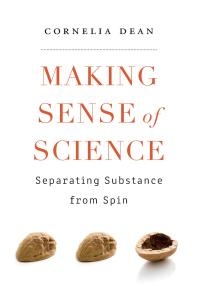

Page
Read `The Research Enterprise' and comment using Perusall
As described on the blog page Midterm Projects, Nate, Rachael, Shelby will be leading a discussion of The Research Enterprise. Ch 2 in Making Sense of Science: Separating Substance from Spin by Cornelia Dean [Harvard University Press] [Amazon] [ SWEM ] [Ebook Central]
In addition to reading the chapter, prior to the end of the day Sunday, help jumpstart the conversation in Perusall (course code CONRADI-SMITH-7TVCY).
Jumpstart the conversation in Perusall
- Highlight 3 passages that seem significant to you. Say why this seems like a "take away".
- Highlight 2 passages for which you have questions. Say what your question is.
- Highlight 1 passage with which you particularly agree or disagree
